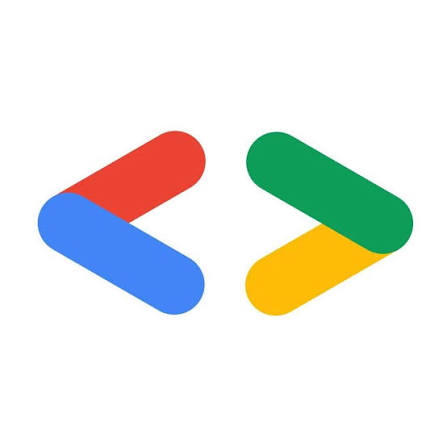
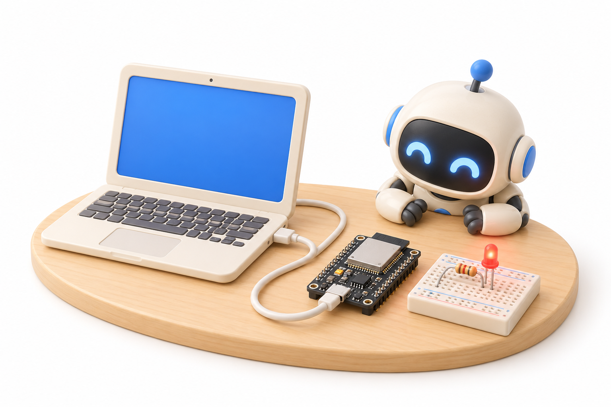

Connect a simple circuit
An ESP32, a resistor and one red LED.

GDGoC UM × RECAn agent that talks to an ESP32 and helps you test a small LED circuit.

You see each tool call and the board’s reply.
An ESP32, a resistor and one red LED.
It reads the board’s configuration and runs a test.
The board reports its state. You confirm the visible light.
A tool is a small function that can read information or perform an action.
Ask the board which LED pin its firmware uses.
Compare the reply with the kit’s GPIO25 wiring card.
Restore the approved mapping if it is wrong.
Run the LED test and ask you what happened.
The laptop reaches Gemini online. USB carries commands to the ESP32.
Use an ESP32-DevKitC V4 with a small red LED. USB supplies the board.
GPIO25 HIGH lights the LED.
GPIO25 LOW turns it off.
| Item | Qty | REC preparation |
|---|---|---|
| ESP32-DevKitC V4 with headers | 1 | Same model in all kits. Pre-flash firmware. |
| USB data cable | 1 | Micro-USB for this board. Check data transfer. |
| Breadboard | 1 | Verify fit and access to GPIO25 and GND. |
| Ordinary 5 mm red LED | 1 | Low current. Mark polarity. |
| 220 Ω resistor | 1 | ¼ W rating is sufficient for this LED circuit. |
| Male-to-male jumper wires | 2 | One for GPIO25 and one for GND. |
Planning example: 40 participants = 20 kits + 2 spare kits. Each pair brings one laptop.
We provide the connection code. Students learn when to use each tool.
| Python tool | USB command | What it does |
|---|---|---|
read_board_status() | STATUS | Read the pin and commanded LED state. |
set_led(on: bool) | LED ON / OFF | Switch the output and acknowledge. |
restore_workshop_config() | RESTORE | Restore the approved GPIO25 mapping. |
The agent chooses a tool. Our code executes it and gives the reply back.
“Turn the LED on.”
set_led(True)Python validates the request.
LED ON\nFirmware sets the configured output HIGH.
{"ok": true}The agent reports the acknowledgement.
Choose a scenario and step through the example.
Kit wiring card: LED on GPIO25.
Illustrative simulation.
No live AI or hardware connection.
No tool called yet.
The agent needs information from the board.
The kit’s wiring card says GPIO25.
The firmware is using a different pin.
The agent restores the approved mapping, repeats the LED test and asks for your observation.
Accept STATUS, LED and RESTORE.
Reply with one JSON line.
Open the selected USB port.
Validate, send and wait for a reply.
Register the tools.
Use results to choose the next action.
Use ADK’s development interface.
Keep tool calls visible.
Agent(
instruction="Use board replies.\nAsk the user to confirm the light.",
tools=[
read_board_status,
set_led,
restore_workshop_config
]
)Teaching excerpt. The starter adds the model, imports, API key and serial setup.
Prepared firmware and starter code keep the first success within reach.
Watch tool calls in a simulated board demo.
Wire the LED and run a manual serial test.
Register supplied Python functions with ADK.
Read replies, restore the mapping and retest.
Explain the tool sequence and confirm the LED.
Python functions give an agent actions it can execute.
ADK documentation ↗mcp-serial exposes commands and device replies.
mcp-serial on GitHub ↗Arduino MCP Server adds compile, upload and monitoring.
Arduino MCP Server on GitHub ↗Parts, quantities, wiring and acceptance checks.
Open the REC preparation checklist ↗